텔레픽스 (TelePIX) · 데이터사이언스부문TelePIX · Data Science Division
신현진Hyunjin Shin
SAR · 광학 위성영상 분석 연구원SAR & Optical Satellite Imagery Analyst
SAR와 광학 위성으로 재난·환경·산업활동을 정량화합니다. 홍수·산사태·지반침하·산불·기름유출부터 해빙과 제련소 가동까지, 원시 전파 신호를 의사결정에 쓸 수 있는 지도와 수치로 바꾸는 일을 합니다.I turn SAR and optical satellite data into decision-ready maps and numbers — floods, landslides, ground subsidence, wildfires, oil spills, Arctic sea ice, and industrial activity.
소개About
위성에서 내려오는 전파와 빛을 물리적으로 해석해, 지상에서 실제로 무슨 일이 일어났는지를 수치로 만드는 일을 합니다. SAR 간섭측량으로 밀리미터 단위 지반 변위를 재고, SWIR 밴드로 용광로가 돌아가는지를 보고, 후방산란 분포에서 침수 경계를 자동으로 찾아냅니다.
재난 대응처럼 속도가 전부인 일과, 검보정처럼 정확도가 전부인 일을 모두 해왔습니다. 결과가 재현되지 않으면 재현되지 않았다고 적고, 원인을 찾지 못했으면 찾지 못했다고 적습니다. 그 기록이 다음 사람의 출발점이 된다고 생각합니다.
I work on turning the radio waves and light coming down from satellites into numbers about what actually happened on the ground — measuring millimetre-scale deformation with SAR interferometry, reading furnace activity off SWIR bands, finding inundation boundaries automatically in backscatter distributions.
I have worked where speed is everything, as in disaster response, and where accuracy is everything, as in sensor calibration. When a result does not reproduce, I write that it did not. When I cannot find the cause, I write that too — because that record is where the next person starts.
SAR 분석SAR
광학 분석Optical
데이터 · 개발Data & Code
도메인Domain
학력 · 경력Education & Career
학력Education
-
2023.03 – 2025.02
이학석사 · 지구물리학M.S. in Geophysics
강원대학교 대학원 지구물리학과Dept. of Geophysics, Kangwon National University
위성지구물리연구실 (지도교수 한향선)Satellite Geophysics Lab (Advisor: Prof. Hyangsun Han)
-
2019.03 – 2023.02
이학사 · 지구물리학전공B.S. in Geophysics
강원대학교 자연과학대학 지질·지구물리학부Division of Geology & Geophysics, Kangwon National University
경력Career
-
2025.02 – 현재2025.02 – Present
텔레픽스 (TelePIX)TelePIX
데이터사이언스부문 · 위성영상 분석 연구원Data Science Division · Satellite Imagery Analyst
SAR·광학 위성 분석, InSAR 지반변위, 재난 신속대응, 위성 검보정SAR and optical analysis, InSAR ground deformation, disaster rapid response, sensor calibration
논문Publications
제목을 누르면 원문으로 이동합니다.Titles link to the published papers.
-
2026
ALOS-2 차분간섭과 ICESat-2 고도계를 이용한 동남극 David 빙하 상류 빙저호 식별 및 모니터링Identification and Monitoring of Subglacial Lakes Upstream of David Glacier, East Antarctica, Using ALOS-2 Differential Interferometry and ICESat-2 Altimetry
New Zealand Journal of Geology and Geophysics, 69권New Zealand Journal of Geology and Geophysics, vol. 69 제1저자First author 학술지Journal
David 빙하 상류에서 2015–2020년 DInSAR로 원형 프린지 6개를 탐지하고, ICESat-2 표고 관측으로 그중 5개가 기존에 보고되지 않은 빙저호임을 확인했다. 작고 느리게 변하는 빙저호 감시에 위성 DInSAR이 유효함을 보였다.Six circular fringe patterns were detected upstream of David Glacier with DInSAR over 2015–2020, and ICESat-2 elevations confirmed five of them as previously unreported subglacial lakes — showing satellite DInSAR works for small, slowly evolving lakes.
doi:10.1002/jgo2.70019 -
2026
MANGO: 맹그로브 분할을 위한 전지구 단일시기 페어 데이터셋MANGO: A Global Single-Date Paired Dataset for Mangrove Segmentation
arXiv 프리프린트 2601.17039 (텔레픽스)arXiv preprint 2601.17039 (TelePIX) 공저 (3저자)Co-author (#3) 프리프린트Preprint
2020년 Sentinel-2 영상 중 맹그로브 연간 마스크와 정합되는 단일시기 관측을 골라 124개국 42,703쌍의 라벨 데이터셋을 만들었다. 선정은 화소 단위 좌표 참조를 쓰는 표적탐지 기반 방식이며, 국가 분리 분할로 의미분할 구조들을 벤치마크했다.From 2020 Sentinel-2 imagery, single-date observations matching the annual mangrove mask were selected into 42,703 labelled pairs across 124 countries. Selection uses a target-detection approach with pixel-wise coordinate references, benchmarked under a country-disjoint split.
arxiv.org/abs/2601.17039 -
2024
ALOS-2 간섭기법을 통해 발견된 동남극 Vostok 빙저호 부근의 활성 빙저호An Active Subglacial Lake near Vostok Subglacial Lake in East Antarctica Discovered Using ALOS-2 Interferometry
대한원격탐사학회지 40권 5호, 431–444Korean Journal of Remote Sensing, 40(5), 431–444 제1저자First author 학술지Journal
Vostok 빙저호 인근 ALOS-2 ScanSAR 간섭쌍(시간 베이스라인 140일)에 DInSAR과 이중 DInSAR을 적용해 닫힌 원형 프린지를 찾고, ICESat-2 표고 변화로 그것이 빙저호 수위 변화임을 확인했다. 수리 포텐셜로 추정한 배수 경로는 Vostok 빙저호로 이어진다.DInSAR and double-DInSAR on ALOS-2 ScanSAR pairs with a 140-day temporal baseline revealed a closed circular fringe near Vostok Subglacial Lake; ICESat-2 elevation change confirmed it as a lake water-level change. Hydraulic potential suggests the drained water flows into Vostok.
doi:10.7780/kjrs.2024.40.5.1.2 -
2023
인공위성 C-band SAR 영상의 PSInSAR 분석 기반 용담댐 시계열 변위 자료 구축Construction of Time-series Displacement Data of Yongdam Dam Based on PSInSAR Analysis of Satellite C-band SAR Images
GEO DATA 5권 3호, 147–154GEO DATA, 5(3), 147–154 공저 (2저자)Co-author (#2) 학술지Journal
C-band SAR 영상의 PS-InSAR 분석으로 용담댐 시계열 변위 자료를 구축했다.Constructed a time-series displacement dataset for Yongdam Dam from PS-InSAR analysis of C-band SAR imagery.
doi:10.22761/GD.2023.0024
프로젝트Projects
각 카드를 누르면 배경 · 방법 · 결과 그림 · 한계까지 상세 페이지로 이동합니다.Each card opens a detail page: background, method, result figures and limitations.
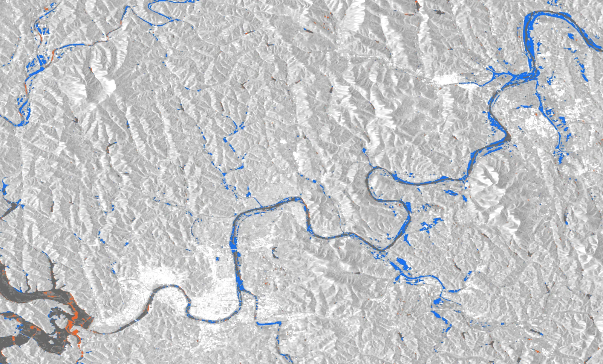
Sentinel-1 홍수 탐지 — Edge-Otsu 수체 변화 + KuroSiwo 검증Sentinel-1 Flood Mapping — Edge-Otsu Water Change with KuroSiwo Validation
Sentinel-1 GRD 사전·사후 영상에서 Edge-Otsu로 수체를 분리하고 차이로 침수(GAIN)·퇴수(LOSS)를 산출하는 비지도 파이프라인을 만들어 텔레픽스 SatCHAT 홍수 모듈로 정리했다. 진주(2025.7)·필리핀 카가얀(2025.9)·태국 남부(2025.11)·고흥(2024.5)에 적용했고, 공개 벤치마크 KuroSiwo 67타일에서 사후 수체 F1 0.905(VV)를 재계산으로 확인했다.Built an unsupervised pipeline that separates water from Sentinel-1 GRD pre/post images with Edge-Otsu and derives newly flooded (GAIN) and receded (LOSS) areas, packaged as the flood module of Telepix's SatCHAT service. Applied to Jinju, Korea (Jul 2025), Cagayan, Philippines (Sep 2025), southern Thailand (Nov 2025) and Goheung (May 2024); on 67 tiles of the public KuroSiwo benchmark the post-event water F1 is 0.905 (VV), recomputed from the masks.

2026 네팔 라수와 빙하붕괴 돌발홍수 — Sentinel-1 SAR 피해 분석2026 Rasuwa (Nepal) Glacier-Collapse Flash Flood — Sentinel-1 SAR Damage Analysis
2026-08-26 네팔 라수와 빙하붕괴 돌발홍수를 사건 4일 뒤 Sentinel-1D SLC 버스트로 분석했다. C밴드 결맞음 변화로는 홍수를 분리하지 못했고(고도 교란, 매칭 후 초과 Δcoh +0.014), 후방산란 강임계 + 대조쌍 방식으로 하류 피해 31.7 ha(대조 대비 12.5배)와 붕괴 원점 흔적 51.3 ha(55배, 보고 좌표와 108 m)를 탐지했다.Analysed the 26 Aug 2026 glacier-collapse flash flood in Rasuwa, Nepal, four days after the event, using Sentinel-1D SLC bursts. C-band coherence change could not isolate the flood (elevation confound; matched excess Δcoh +0.014), but a strict backscatter-decrease threshold with a control pair detected 31.7 ha of downstream damage (12.5× the control) and a 51.3 ha scar at the collapse source (55×, 108 m from the reported coordinate).
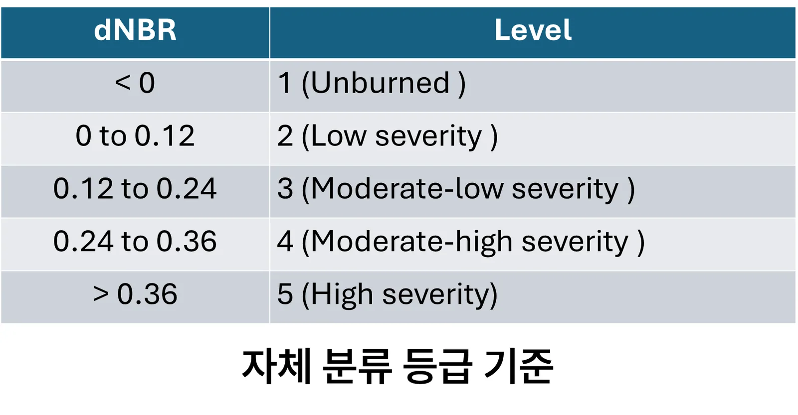
산불 피해 등급 분류 (dNBR)Wildfire Burn Severity Mapping (dNBR)
대형 산불 직후 피해 범위와 심각도를 USGS 5등급으로 자동 분류했다. 하와이·그리스·산청 세 지역에서 검증하고, 정지궤도 위성으로 실시간 화점까지 함께 봤다.Automatic USGS five-class burn-severity mapping right after major fires — validated across Hawaii, Greece and Sancheong, paired with geostationary hotspot detection.
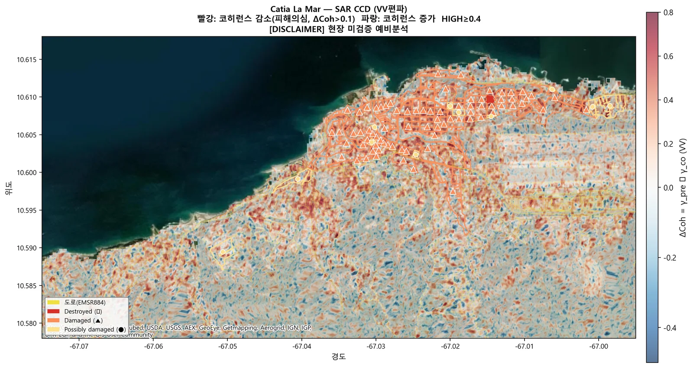
지진 피해 SAR 분석 — 2026 베네수엘라 M7.5 (CCD·DInSAR)SAR Earthquake Damage Assessment — 2026 Venezuela M7.5 (CCD & DInSAR)
2026-06-24 베네수엘라 M7.5 지진 직후 Sentinel-1 SLC로 코히런스 변화탐지(CCD)와 차분간섭(DInSAR)을 수행해 해안 도심(Catia La Mar)의 피해 의심구역·도로 노출을 등급화했다. Copernicus EMS 피해판독(EMSR884)과 광학 AI 건물분류로 교차검증했고, 재계산으로 수치를 다시 확인하면서 기준선 대비 효과가 보고서보다 작다는 점과 DInSAR 절대 변위의 한계를 함께 기록했다.Right after the 24 June 2026 M7.5 Venezuela earthquake, Sentinel-1 SLC pairs were used for coherence change detection (CCD) and differential InSAR to grade suspected damage zones and road exposure in the coastal city of Catia La Mar. Results were cross-checked against Copernicus EMS damage grading (EMSR884) and an optical AI building classifier; a later re-computation confirmed the numbers but showed the lift over baseline is smaller than first reported and that absolute DInSAR displacement is not reliable.
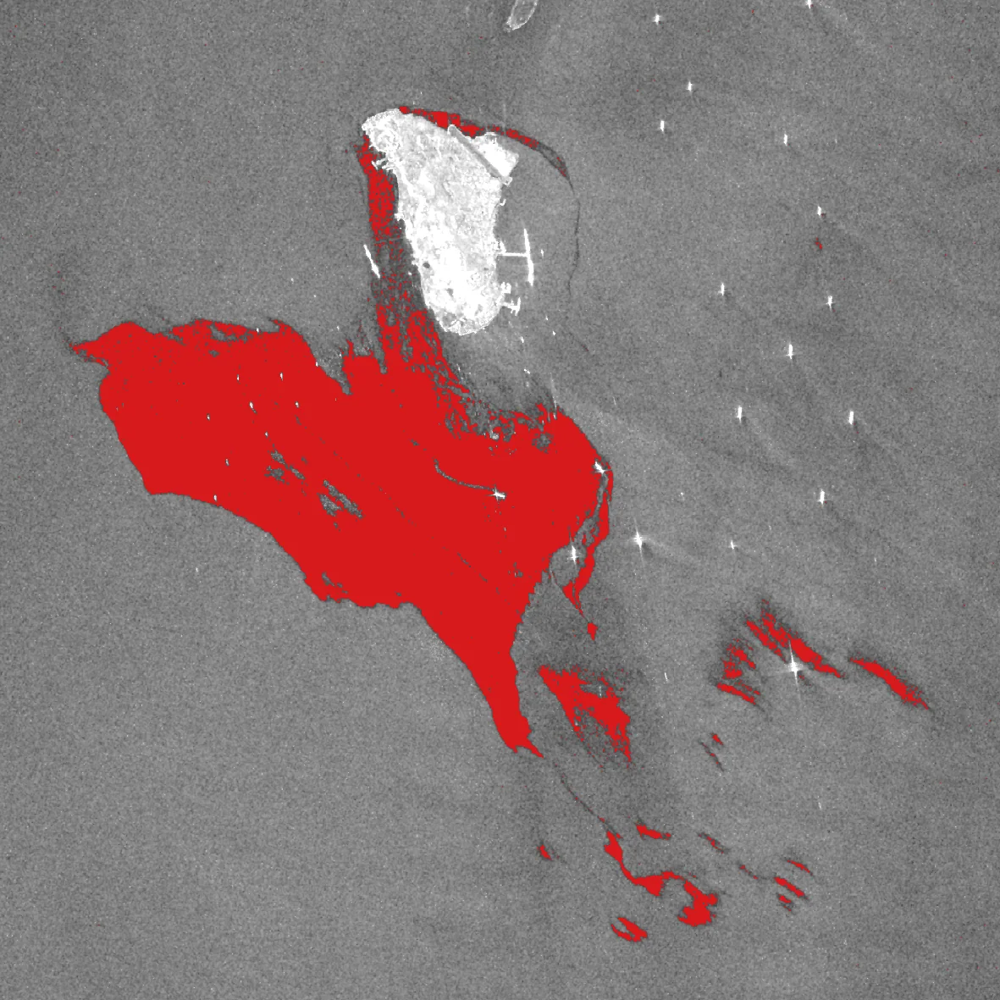
SAR 기반 해상 기름유출 탐지Marine Oil Spill Detection from SAR
기름막은 해수면의 잔물결을 눌러 SAR에서 검게 보인다. 이 성질로 실제 유출 사고 2건을 탐지하고, 자연 현상과의 오탐지를 구분했다.Oil damps capillary waves, so slicks appear dark in SAR. Used that to detect two real spill events — and to separate them from look-alike natural features.

Sentinel-1 PS-InSAR·SBAS 지반변위 분석 (국내 7개 지역 + 광역 + 하강궤도)Sentinel-1 PS-InSAR and SBAS Ground Deformation (7 Korean sites, metro-scale, ascending + descending)
국내 대형 손해보험사와의 지반침하 PoC에서 사고 지역 7곳의 지표 변위를 Sentinel-1로 측정했다. 같은 코레지 스택에서 PS-InSAR(StaMPS)와 자체 SBAS를 함께 돌려 PS 2만8천~20만 점/지역, 수도권 광역 SBAS 107만 픽셀을 만들고, 하강궤도 재처리로 수직·동서 성분을 분리했다. 두 기법 비교와 하강궤도 공백(2022~2024)처럼 잘 안 된 부분도 수치로 남겼다.Measured surface deformation at seven Korean ground-collapse sites for a ground-subsidence PoC with a major Korean P&C insurer. PS-InSAR (StaMPS) and an in-house SBAS ran on the same coregistered Sentinel-1 stacks, giving 28k–206k PS points per site and a 1.07M-pixel SBAS map of the Seoul metro area; descending-orbit reprocessing separated vertical and east-west motion. Where things did not work (PS/SBAS disagreement, the 2022–2024 descending data gap), the numbers are recorded as well.

InSAR 기반 싱크홀(지반침하) 조기경보 — 위험 판정·리드타임 백테스트InSAR-based sinkhole early warning — risk rules and lead-time backtesting
Sentinel-1 PS/SBAS 변위에 시추공 지반등급과 국토안전관리원 지반침하 사고 원장(1,631건)을 결합해 '사고 전에 경보가 가능했나'를 백테스트했다. 부산 사상~하단에서는 사고 지점이 확실히 더 많이 가라앉아 있었고(AUC 0.94) 위험구역 63.4 ha·점 등급 데모까지 만들었다. 무작위 대조군·LOAO·광역 확장에서는 판별력이 크게 떨어져, InSAR 단독 붕괴 예측은 안 된다는 결론도 함께 남겼다.Combined Sentinel-1 PS/SBAS displacement with borehole-based ground grades and a national ground-subsidence accident register (1,631 cases) to test whether warnings could have preceded collapses. In Busan Sasang, accident sites had clearly subsided more (AUC 0.94), leading to a 63.4 ha risk-zone map and a point-grading demo. Random-control, leave-one-accident-out and wide-area tests showed the skill largely disappears elsewhere, so InSAR alone cannot predict collapses.
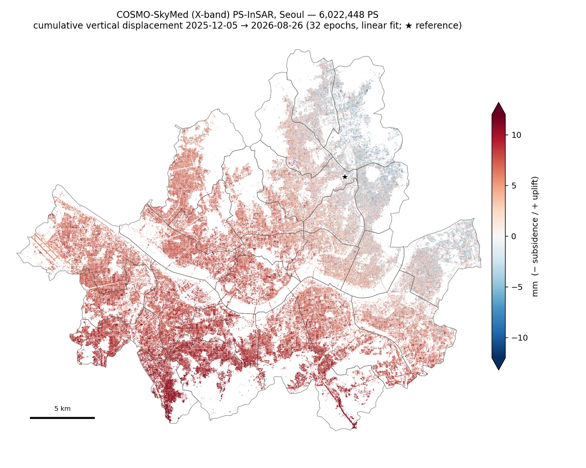
서울 COSMO-SkyMed PS-InSAR와 Sentinel-1 교차검증Seoul COSMO-SkyMed PS-InSAR with Sentinel-1 Cross-Validation
COSMO-SkyMed 2세대(X밴드) 32씬으로 서울 전역 PS-InSAR 6,022,448점을 산출했다. CSG 포맷용 ISCE2 어댑터를 직접 만들고 StaMPS Python 포팅판의 결과 오류·미종료·메모리 버그를 고쳐 완주했다. Sentinel-1 상승·하강 결과와 비교해 같은 계절창에서 r=0.91~0.92를 확인했고, 도시 규모 남북경사가 수직 지반운동임을 상승/하강 경사벡터로 판정했다.Produced a city-wide PS-InSAR map of Seoul with 6,022,448 persistent scatterers from 32 COSMO-SkyMed Second Generation (X-band) scenes. This required a custom ISCE2 reader for the CSG format and fixes to correctness, runtime and memory bugs in a Python port of StaMPS. Cross-validated against Sentinel-1 ascending and descending stacks (r = 0.91–0.92 for matching seasonal windows) and used ascending/descending tilt vectors to show that a city-scale north–south tilt is vertical ground motion.

산사태 InSAR — 경주 태풍 산사태 vs 카라코람 사면 (PS·SBAS)Landslide InSAR — Typhoon Landslides in Gyeongju vs Karakoram Slopes (PS & SBAS)
Sentinel-1 버스트 SLC 를 PyGMTSAR 로 PS·SBAS 처리해 2022 태풍 힌남노 직후 경주 토함산 일대 산사태와 파키스탄 카라코람 산악 사면의 변위속도를 비교했다. 건조 산악(파키스탄)에서는 SBAS와 PS가 r=0.86으로 일치하며 최대 −192 mm/yr 이동 사면을 잡았지만, 숲이 덮인 경주에서는 결맞음 중앙값 0.16으로 잡음이 지배했고 66개 산사태 지점의 속도가 배경과 구별되지 않았다.Sentinel-1 burst SLCs were processed with PyGMTSAR (PS and SBAS) to compare post-typhoon landslides in Gyeongju, Korea (Typhoon Hinnamnor, Sept 2022) with mountain slopes in the Pakistani Karakoram. In the arid Karakoram, SBAS and PS agreed (r = 0.86) and resolved slopes moving up to −192 mm/yr; in forested Gyeongju, median coherence was 0.16, the velocity field was noise-dominated, and velocities at 66 mapped landslides were indistinguishable from background.
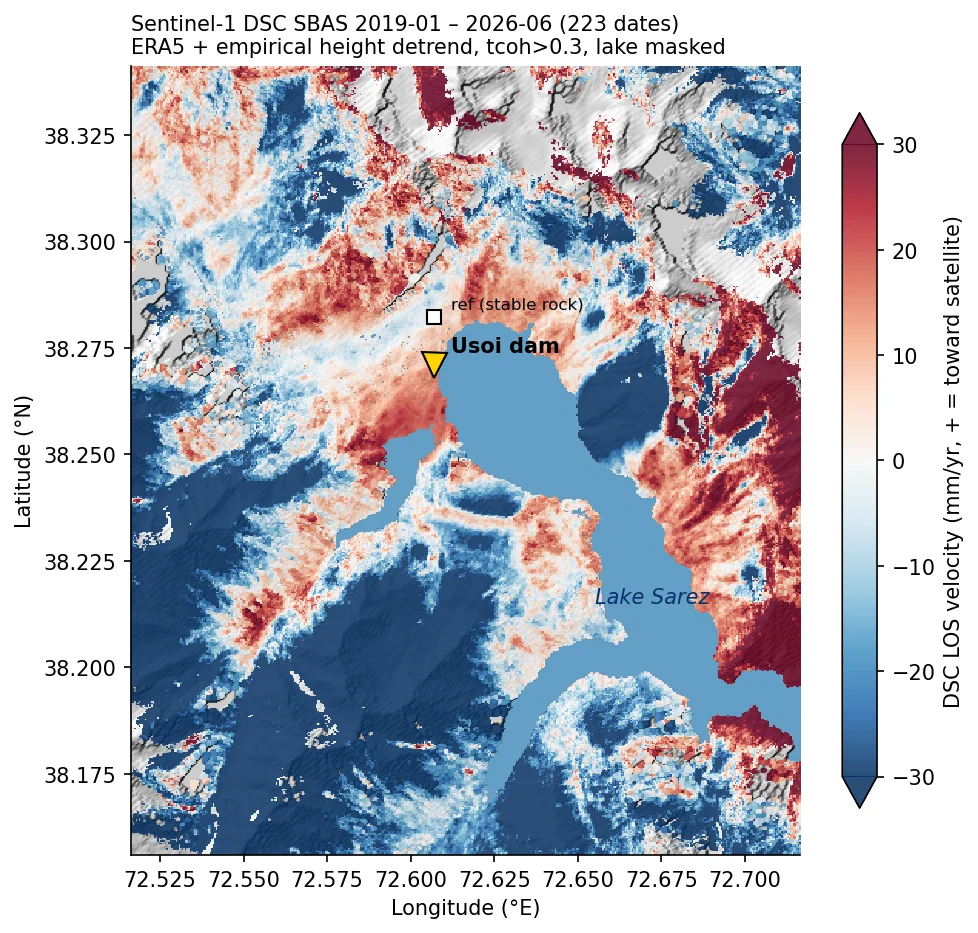
Usoi 자연댐(Sarez 호) Sentinel-1 SBAS 변위 모니터링Usoi Natural Dam (Lake Sarez) Sentinel-1 SBAS Monitoring
타지키스탄 파미르의 Usoi 자연댐 일대를 Sentinel-1 상승·하강 두 궤도 SBAS(ISCE2+MintPy)로 처리해 수직/동서 분해를 시도했다. 하강궤도는 2019–2026 223개 날짜로 AOI 육지 78.7%에서 속도장을 얻었지만, 상승궤도는 AOI 내부 시간결맞음이 0.004로 무너져 분해는 댐에서 남쪽 7.1% 영역에만 남았다. 최종 제품은 ERA5와 경험적 고도 detrend로 보정한 하강궤도 LOS 속도장이다.Processed Sentinel-1 ascending and descending SBAS stacks (ISCE2 + MintPy) over the Usoi natural dam in the Tajik Pamir and attempted a vertical/east-west decomposition. The descending track (223 dates, 2019–2026) yielded velocities over 78.7% of the land AOI, but ascending temporal coherence collapsed to 0.004 inside the AOI, so the decomposition survives only on 7.1% of the grid south of the dam. The delivered product is a descending LOS velocity map corrected with ERA5 plus an empirical elevation detrend.
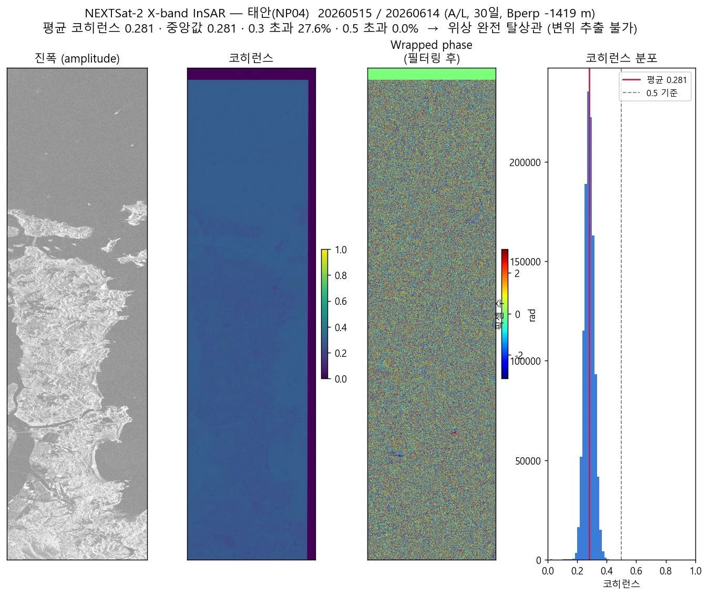
해안사구 다중기법 SAR 분석 (InSAR · OT · ACD)Coastal Dune Monitoring with Three SAR Techniques
국산 X-band와 Sentinel-1 C-band에 InSAR·오프셋트래킹·진폭변화탐지 세 기법을 동일 절차로 교차 적용했다. 결론은 솔직하다 — 후보 55개 중 유일하게 조건을 통과한 페어조차 평균 코히런스 0.281로 위상이 완전히 탈상관했다.Applied three techniques — phase InSAR, offset tracking and amplitude change detection — identically across a domestic X-band sensor and Sentinel-1 C-band. The honest finding: of 55 candidate pairs only one qualified, and even that one decorrelated completely at a mean coherence of 0.281.

국산 SAR(NEXTSat-2) InSAR 처리 파이프라인 — 국립공원 지표변위 모니터링NEXTSat-2 SAR InSAR pipeline for national-park ground-motion monitoring
ISCE2에 리더가 없는 국산 소형 SAR 위성 NEXTSat-2(N2) 영상을, ISCE2를 고치지 않고 COSMO-SkyMed 리더를 런타임 패치(spoofing)해 InSAR 처리하는 파이프라인을 만들었다. 실제 CSK 1일 쌍으로 처리 체인을, N2 구조 시험파일로 메타데이터 주입을 검증하고 고객 측 노트북용 현장 번들로 이관했다. 재검토에서 CSK 검증 결과가 빈 DEM 때문에 지형 위상을 제거하지 못했다는 점을 찾아 기록했다.Built a pipeline that runs InSAR on NEXTSat-2 (N2), a Korean small SAR satellite that ISCE2 cannot read, by patching the COSMO-SkyMed reader at runtime instead of modifying ISCE2. The processing chain was tested on a real one-day CSK pair and the metadata injection on an N2 structure-only file, then packaged for on-site processing on the client's laptop. A later review found that the CSK test used a void DEM, so topographic phase was never removed.
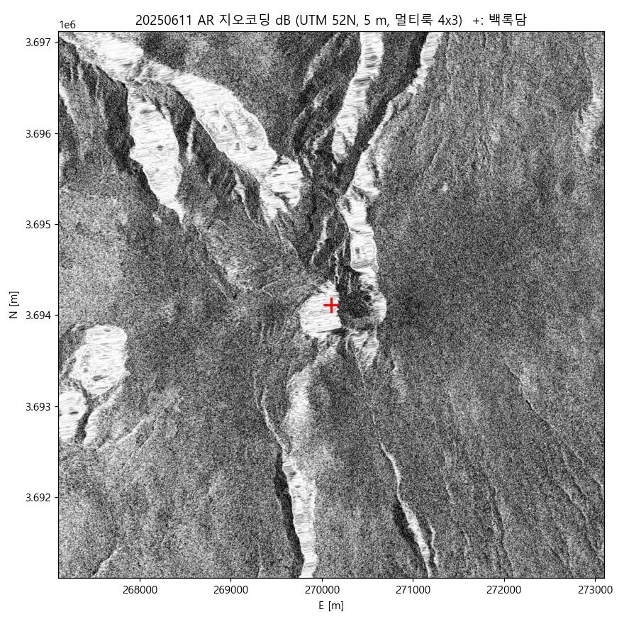
국산 SAR 위성 엄밀센서모델 기하보정Rigorous Sensor Model Geocoding for a Domestic SAR Satellite
국산 X-band SAR 위성은 어떤 상용·공개 소프트웨어도 지원하지 않는다. 파일 안의 궤도·타이밍 정보만으로 거리-도플러 센서모델을 직접 세워 12씬을 5 m 격자로 지오코딩했다.No commercial or open SAR software supports Korea's X-band smallsat. I built the range-Doppler sensor model from scratch — using only the orbit and timing inside the file — and geocoded 12 scenes onto a 5 m grid.
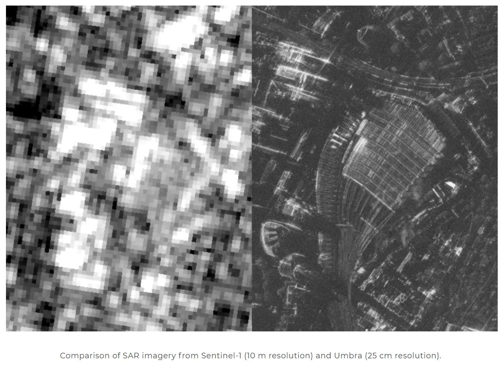
초고해상도 SAR 화산 모니터링Volcano Monitoring with Very-High-Resolution SAR
25cm급 상용 SAR(Umbra)로 화산 지형을 관측하고, Sentinel-1(10m)과 해상도를 직접 비교했다. SICD 포맷을 직접 파싱해 간섭 처리까지 시도했다.Observed volcanic terrain with 25 cm commercial SAR (Umbra) and compared it directly against Sentinel-1 at 10 m — parsing SICD natively and attempting interferometry.

중남미 고해상도 DTM 제작 및 초해상화High-Resolution DTM Generation for Latin America
중남미에는 30m급 무료 DEM밖에 없다. 저비용으로 5–10m DTM을 만들 수 있는지를 InSAR · 스테레오 · LiDAR 세 경로로 검증했다.Latin America only has free 30 m DEMs. We tested whether 5–10 m DTMs could be produced cheaply, via three routes: InSAR, stereo photogrammetry and LiDAR.

초소형 위성 영상처리 전 과정 — 복사보정 · 기하보정 · 품질분석End-to-End CubeSat Image Processing — Radiometric, Geometric, Quality
자사 초소형 위성의 원시 패킷을 영상으로 만들고, 물리량으로 보정하고, 지도에 앉히는 전 과정을 다뤘다. 남이 만든 산출물이 아니라 센서 자체를 상대한 유일한 작업이다.Took our own CubeSat from raw downlink packets to a calibrated, map-registered image — radiometry, geometry, sharpness and pointing. The one project where I worked on the sensor itself rather than somebody else's product.

접경지역 도로 공사 진행 변화탐지Border-Area Road Construction Change Detection
공개 상용 위성영상 시계열로 접경지역 도로 공사의 진행을 시기별로 추적했다. 5개월 만에 누적 연장 0.2 km에서 7.06 km로 늘었고, 최근접 지점은 군사분계선에서 약 230 m다.Tracked road construction near the inter-Korean border through a time series of commercial satellite imagery. Cumulative length grew from 0.2 km to 7.06 km in five months; the nearest point sits about 230 m from the Military Demarcation Line.

제련소 열원 활동 모니터링 (TAI)Smelter Thermal Activity Monitoring (TAI)
Sentinel-2 SWIR 밴드로 용광로의 열 신호를 잡아 제련소 가동 여부를 원격 판정했다. 철강(독일·호주)과 구리(칠레·중국) 양쪽에 적용했다.Used Sentinel-2 SWIR bands to pick up furnace heat signatures and infer whether a smelter is running — applied to steel (Germany, Australia) and copper (Chile, China).
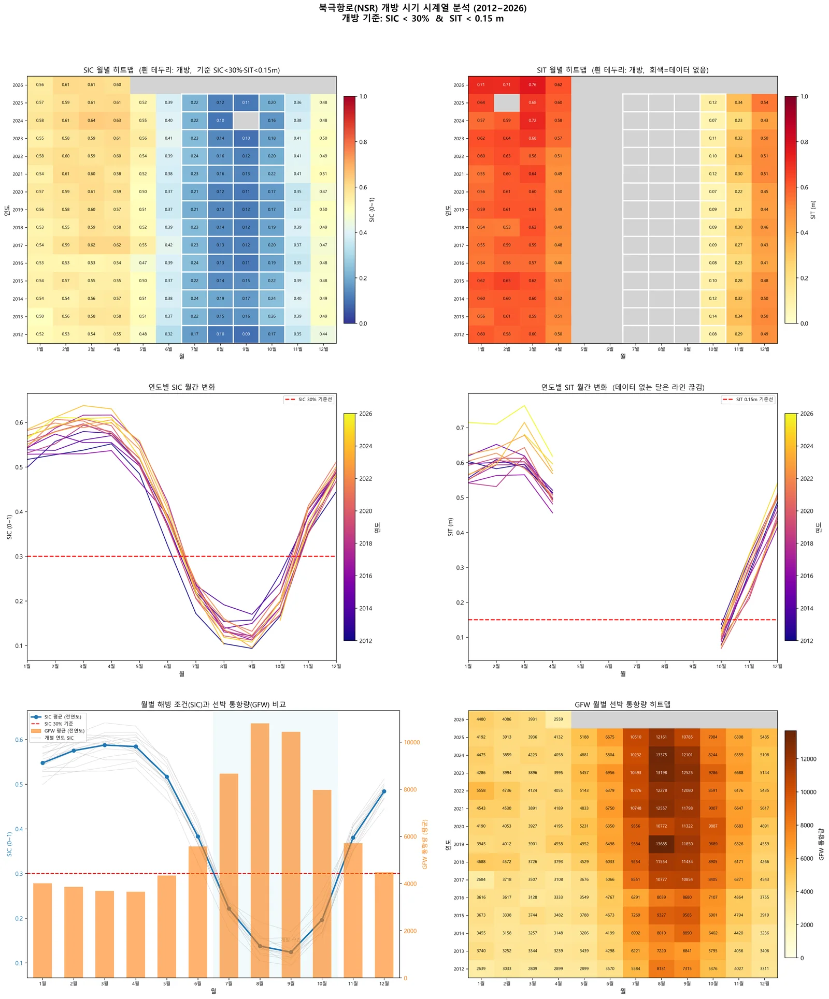
북극항로(NSR) 개방 시기 정량 분석Quantifying the Northern Sea Route Opening Window
해빙농도·해빙두께·실제 선박 통항 데이터를 겹쳐, 북극항로가 해마다 언제 열리고 그 기간이 어떻게 변해왔는지를 수치로 만들었다.Overlaid sea-ice concentration, thickness and real vessel traffic to quantify when the Northern Sea Route opens each year — and how that window has shifted.
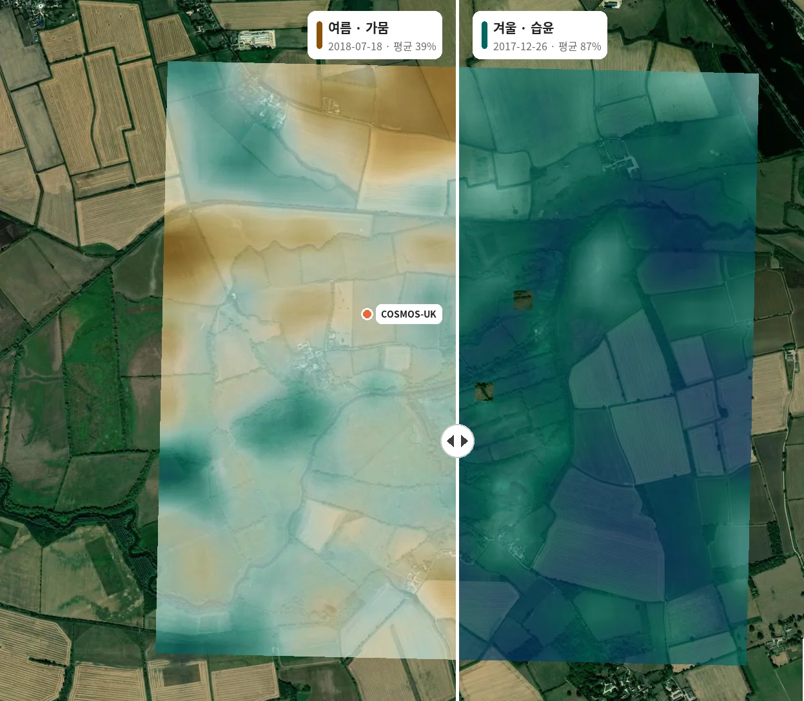
Sentinel-1 토양수분 산출 — 논문 3편 재현·검증Sentinel-1 Soil Moisture Retrieval: Reproducing and Validating Three Published Methods
무료 위성자료(Sentinel-1·2, SMAP)만으로 표층 토양수분을 산출하고, 공개 논문 3편의 방법을 그대로 적용해 현장관측과 비교했다. 영국에서는 상관 수준(r² 평균 0.45 vs 논문 0.47)을 재현했지만 절대오차는 재현하지 못했다. 미국 SCAN 재현과 국내 관측소 1점 비교는 실패했고, 실패 기록도 그대로 남겼다.Retrieved surface soil moisture from free satellite data only (Sentinel-1/2, SMAP) by applying three published methods unchanged and comparing against in-situ networks. In the UK, correlation levels were reproduced (mean r² 0.45 vs 0.47 in the paper) but absolute errors were not. The US SCAN reproduction and Korean single-station comparisons failed; those failures are documented as-is.

맹그로브 분포 · 변화 모니터링Mangrove Extent & Change Monitoring
입사 후 첫 프로젝트. Google Earth Engine과 Random Forest로 맹그로브를 분류하고, 태풍 전후 5년 NDVI 시계열로 회복 과정을 추적했다.My first project here. Classified mangroves with Google Earth Engine and Random Forest, then tracked five years of NDVI to follow post-typhoon recovery.
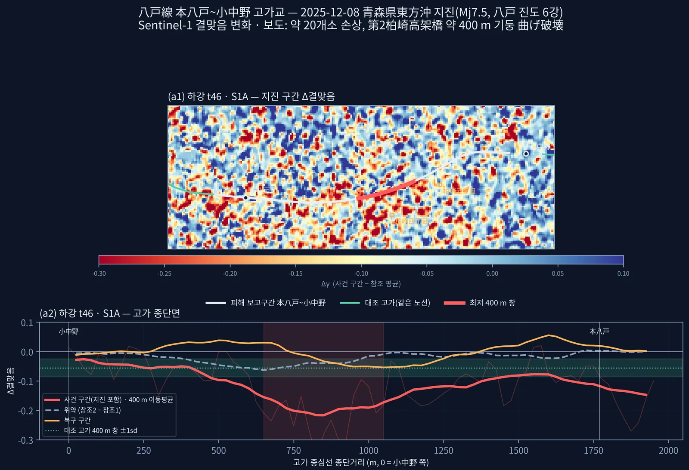
일본 철도 재해 SAR 탐지 타당성 조사Railway Disaster Detection with SAR — Feasibility Study (Japan)
일본 철도 운영사 대상으로 무료 Sentinel-1 이 철도 재해를 사건 직후 판정할 수 있는지 실제 사건 7건으로 측정. 지진 손상 고가교는 결맞음 변화로 두 궤도가 같은 400 m 구간을 지목했고(무작위 널 백분위 0.10 %), 하천 범람은 당일 관측이면 잡혔다. 교량 유실·늦은 관측·산림 붕괴지·겨울 DInSAR 는 실패했고, 그 원인을 타이밍·해상도·결맞음·후방산란 대비·지형으로 분리했다.For a Japanese railway operator, measured on seven real events whether free Sentinel-1 can assess railway disaster damage right after the event. For an earthquake-damaged viaduct, coherence change from two independent orbits pointed to the same 400 m section (0.10th percentile of a random-transect null), and river flooding was mapped when imaged the same day. Bridge washout, late acquisitions, forest landslides and winter DInSAR failed; the failures were separated into timing, resolution, coherence, backscatter contrast and terrain.
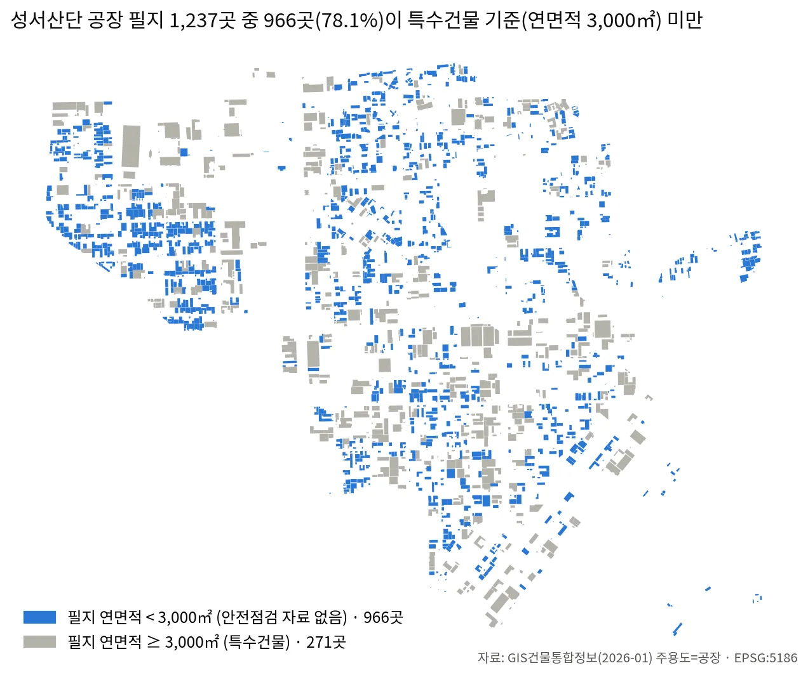
위성·공간정보 기반 중소 공장 인수심사 분석Satellite & Geospatial Underwriting Analysis for SME Factories
국내 대형 손해보험사와 진행한 PoC에서 대구 성서산업단지 중소 공장 물건을 위성영상·공공 공간데이터로 판독하는 인수심사 참고자료를 만들었다. 본인은 공장등록현황→KSIC 업종 연결과 GIS건물통합정보 분석을 맡았고, 공장 필지 1,237곳 중 966곳(78.1%)이 특수건물 기준(연면적 3,000㎡) 미만이라 안전점검 자료가 없다는 점을 원자료에서 산출했다.In a PoC with a major Korean P&C insurer, we built underwriting reference reports for small and mid-sized factories in Daegu's Seongseo industrial complex from satellite imagery and public geospatial data. I handled the factory-registry-to-KSIC industry linkage and the building-register GIS analysis, and computed from raw data that 966 of 1,237 factory parcels (78.1%) fall below the 3,000 m² special-building threshold and therefore have no mandatory fire-safety inspection record.
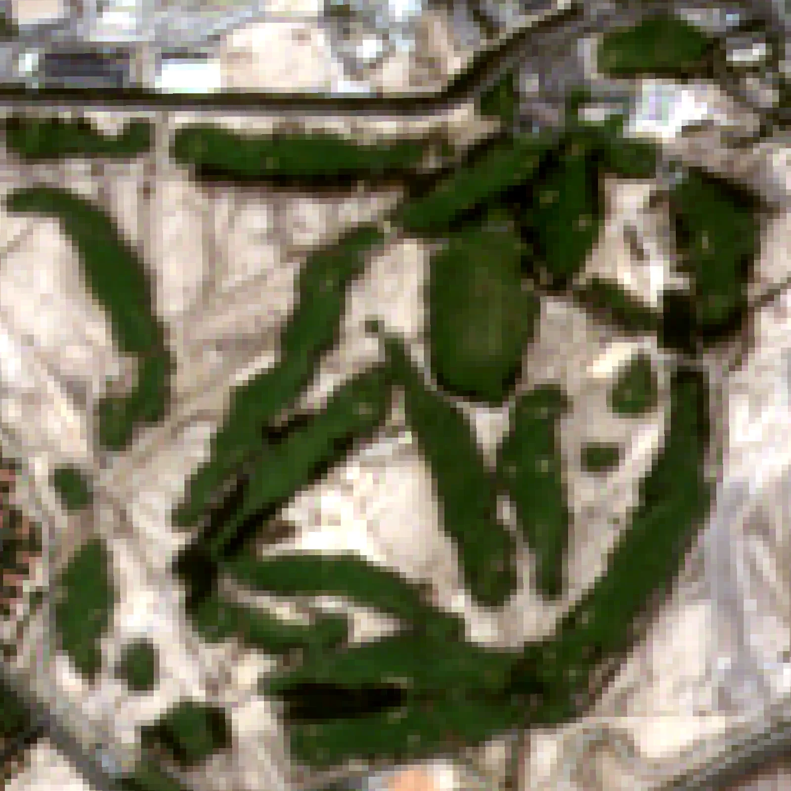
SpaceUp 경진대회 — 도시녹지 모니터링SpaceUp Competition — Urban Greenery Monitoring
중동 도시의 녹지를 위성으로 감시하는 대시보드 프로토타입. 건조 기후에서 식생지수가 어떻게 다르게 작동하는지를 다뤘다.A dashboard prototype for monitoring urban greenery in the Middle East, working through how vegetation indices behave differently in arid climates.
제안 · 협업Proposals & Engagements
고객사명과 계약 정보는 공개하지 않으며, 담당한 역할과 기술 내용만 적었습니다.Client names and contract details are withheld; only my role and the technical content are described.
-
광역 지자체 지반침하 감지체계 구축 사업 제안Metropolitan ground-subsidence monitoring proposal
2026.03 – 2026.05InSAR 기반 지반침하 정밀 모니터링을 도시 인프라에 적용하는 사업 제안. 정성평가 발표자료 v1.0–v4.0 제작, 고위험지역 선정 기준 데이터 조사, SAR 위성 스펙 비교 분석 담당. 최종 발표 자료 완성·제출.Proposal to apply InSAR subsidence monitoring to city infrastructure. Produced the qualitative-evaluation deck through four revisions, researched high-risk-area selection criteria, and compared SAR satellite specifications. Submitted.
-
손해보험사 위성 기반 리스크 분석 협업 (PoC · PM)Insurer satellite risk-analytics collaboration (PoC · PM)
2025.10 – 진행 중국내 대형 손해보험사와의 위성정보 기반 보험 리스크 평가 PoC. 주간 정례회의 PM으로 시설물 변화탐지와 지반침하 사전알람 두 과제를 운영하며 업종 데이터 매칭, 연약지반 판정 기준, AOI 선정안, 워닝 시나리오를 설계했다. 이 과제에서 나온 기술 작업이 지반변위 분석, 싱크홀 조기경보, 서울 X밴드 PS-InSAR, 공간정보 인수심사 네 건이다.A proof-of-concept with a major Korean insurer on satellite-based risk assessment. As PM I ran two workstreams — facility change detection and early subsidence warning — covering industry-data matching, soft-ground criteria, AOI selection and warning scenarios. Four of the technical projects here came out of this engagement: ground deformation, sinkhole early warning, Seoul X-band PS-InSAR, and spatial-data underwriting.
-
국립공원 관리기관 차세대소형위성 영상 분석 용역National park authority — next-gen smallsat image analysis
2025.12 – 2026.09X-band 차세대소형위성 자료의 InSAR 활용 가능성 검토. 기존 Sentinel-1 DInSAR의 한계를 분석하고 대안을 제시, 제안서와 결과 보고서를 작성했다. 원본 데이터 반출이 불가해 고객 측 장비에서 돌아가는 이식형 처리 번들까지 만들어 이관했다. 이 과제에서 국산 위성 처리 파이프라인, 해안사구 다중기법 분석, 엄밀센서모델 기하보정 세 건이 나왔다.Assessed whether X-band smallsat data supports InSAR, analysed why the existing Sentinel-1 DInSAR fell short, and wrote the proposal and results report. Since the raw data could not leave the client's premises, I also built and handed over a portable processing bundle that runs on their own machine. Three projects here came out of it: the domestic-sensor processing pipeline, the coastal dune multi-technique analysis, and the rigorous sensor model.
-
보험사 산불 모니터링 솔루션 제안Wildfire monitoring solution for an insurer
2025.04 – 2025.09자사 위성 플랫폼 기반 산불 모니터링을 보험 리스크 분석에 적용하는 제안. 고해상도 상업위성(50cm급) 샘플 분석, 위성별 해상도 비교표, 발표자료 제작을 담당했다.Proposed applying our satellite platform's wildfire monitoring to insurance risk analysis. Handled 50 cm commercial imagery sample analysis, a satellite resolution comparison table, and the pitch deck.
연혁Timeline
프로젝트Projects
- 2025.02 텔레픽스 입사 — 데이터사이언스부문Joined TelePIX — Data Science Division
- 2025.03 맹그로브 모니터링 · 중남미 DTM 제작 착수Started mangrove monitoring and Latin America DTM work
- 2025.04 제련소 열원 모니터링(TAI) 개발 착수Began smelter thermal activity (TAI) development
- 2025.07 Sentinel-1 홍수 탐지 알고리즘 개발 · 산불 dNBR 분류Flood detection algorithm and wildfire dNBR classification
- 2025.08 위성영상·AI 재난재해 모니터링 워크숍 참가Attended satellite/AI disaster monitoring workshop
- 2025.09 위성활용 컨퍼런스 참가Attended satellite applications conference
- 2025.11 InSAR 지반변위 모니터링 착수 — 경주·카라코람 산사태Started InSAR ground-deformation monitoring — Gyeongju and Karakoram landslides
- 2025.12 국립공원 관리기관 N2 InSAR 검토 미팅N2 InSAR feasibility meeting with national park authority
- 2026.02 북극항로 연구개발계획서 작성 · Umbra SAR 분석Northern Sea Route R&D plan; Umbra SAR analysis
- 2026.03 사내 워크숍 발표 · 지자체 사업 제안 착수Internal workshop talk; started the metropolitan proposal
- 2026.05 손해보험사 PoC 착수 — 주간회의 PMInsurer PoC kickoff — weekly meeting PM
- 2026.05 손해보험사 지반침하 PoC 본격 착수 — 국내 7개 지역 PS·SBASInsurer subsidence PoC in earnest — PS and SBAS across 7 domestic sites
- 2026.06 싱크홀 조기경보 규칙 설계 · 베네수엘라 지진 CCD 분석Sinkhole early-warning rules; Venezuela earthquake CCD analysis
- 2026.07 PS-InSAR 파이썬 구현 · Usoi 자연댐 SBASPS-InSAR Python implementation; Usoi natural dam SBAS
- 2026.08 네팔 빙하붕괴 돌발홍수 분석 · N2 엄밀센서모델 착수Nepal glacial outburst flood analysis; start of the N2 rigorous sensor model
- 2026.09 서울 X밴드 PS-InSAR · 철도재해 SAR 타당성 · 하강궤도 분해Seoul X-band PS-InSAR; railway hazard SAR feasibility; descending-track decomposition
- 2026.10 SAR 토양수분 논문 3편 재현 검증 · 공간정보 인수심사 분석Reproduction of three soil-moisture papers; spatial-data underwriting analysis
학술 · 발표 활동Talks & Conferences
- 2026.03 사내 기술 워크숍 발표Internal technical workshop talk
- 2025.09 위성활용 컨퍼런스 2025 참가Satellite Applications Conference 2025
- 2025.08 위성영상과 AI를 활용한 재난재해 모니터링 워크숍Workshop: Disaster Monitoring with Satellite Imagery and AI
- 2025.07 환경위성 사용자 워크숍 — 환경위성 복사보정 시스템Environmental Satellite User Workshop — radiometric calibration
연락Contact
분석 코드는 홈페이지에 싣지 않고 sar-eo-analysis 저장소에 정리해 두었습니다. 24개 중 16개가 SAR 작업입니다.Analysis code is not embedded here; it lives in the sar-eo-analysis repository. 16 of the 24 projects are SAR work.